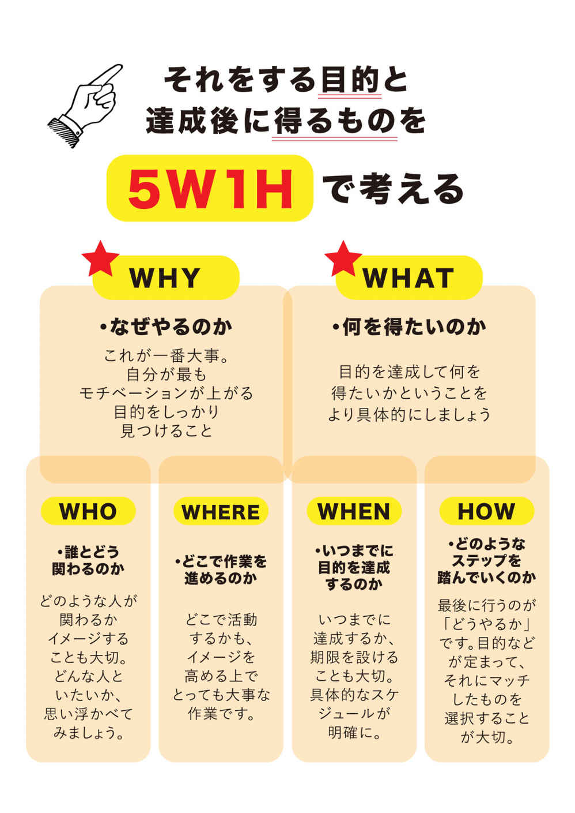

| 楽してうまくいく「すごい習慣化」 | |
| 上田仁 | |
| Hitotsuku Publication (2018) | |
楽してうまくいく「すごい習慣化」
上田仁
はじめに
「できる人は人より優れた能力・才能を持っている?」
仕事もプライベートも完璧で、何でもできる人を見ると、あなたはそう思うかもしれません。
「自分はいつも中途半端で終わる」
「何をやってもすぐに飽きてしまう」
そうやって、自分に対する諦めの気持ちを、あなたは持っているかもしれません。
しかし、これが幻想だと言ったら、あなたはどう思いますか？「そんなバカな」とか「都合の良いことを言って」と、私の言うことを真に受けてくれないかもしれません。
そんなあなたにこそ、この書籍を読んでもらえたら嬉しいです。この本では、無理せず楽をしながら習慣化する方法を紹介します。「ダイエットが続かない」、「新しいことを始めてもすぐに諦めてしまう」という方は必見の内容です！ ひょっとすると、あなたの人生を大きく変えるきっかけになるかも......。
習慣化には、能力や才能はいりません。実は、誰がやっても同じ結果が出る再現性のある方法が世の中に存在する
のです。本書では、その方法を余すことなく、お伝えします。これを読んだあなたは、これまでの持っていた常識が変わり、物事を習慣化させる天才になるでしょう。
実際、ここで紹介する方法は、多くの人が実践して大きな成果を生み出しています。たとえば、この手法を用いて、さまざまなことを習慣化させることに成功した会社員のＫさんは、同じ時間で２倍の仕事をこなせるようになりました。そして、驚くことに月収も１５０％
アップ！！ ウソのような話に聞こえるかもしれませんが、これは本当のことです。なので、この書籍はただ読むのではなく、ご自身の仕事や取り組みたいことに置き換えて読んでいただければ幸いです。
・人間ってこんな生き物
習慣化の方法をお伝えする前に、とっても大事なことをお伝えします。それは、人間ってどんな生き物かということです。それを知ると、これまでダイエットや習い事などを習慣化できなかった理由がよく分かります。
人間は、生活に必要なことを習慣化することは難しくありません。たとえば、会社に行くために朝早く起きたり、１日３回食事をしたり、お風呂に入ったり、歯を磨いたり......。こう考えると、あなたは日々習慣によって行動していることがわかります。
実際、人間の行動の75
％
は、習慣化した無意識の行動が占める
と言われています。あなたの生活を振り返ると、この割合に近くなるのではないでしょうか。このように、あなたの人生は習慣に支配されているのです。
ただし、ここで習慣化できているのは、生きていくために必要な習慣です。この中には、仕事などで目標達成したり、人生をより良くするための「良い習慣」というのはほとんど含まれていないのではないでしょうか。今までの人生を変えるには、このような良い習慣を身につけることが必要不可欠です。
しかし、良い習慣を身につけるのはなかなか難しいです。これは、あなたも人生を通じて体感してきたことではないでしょうか。なぜ、生活に必要な習慣は身につき、良い習慣はなかなか身につかないのでしょうか。
その理由の一つとして考えられているのは、人間の本能です。私たちには、「ホメオスタシス」という本能が埋め込まれています。ホメオスタシスとは、人間は変化せず同じ状態にいたいというものです。すなわち、変化を拒絶するという本能が私たちにはあるのです。驚きですよね？ 良い習慣を身につけて、「人生を充実させたい！」とか「仕事で成果を出したい、もっと成長したい！」と思うのは、ある意味本能に矛盾する考え方なのです。
「それでは、人間は変わることができないじゃないか」と考えてしまいます。良い習慣を身につけることは、これまでやっていなかったことに取り組むことになります。すなわち、変化しなければならない。そして、それは本能に反しているとなると、習慣化なんてできないと思ってしまうでしょう。
しかし、人間は本能の赴くままに生きるわけではありません。自分の思い描いた理想に向かって、行動することもできます。そして、その方法が本書でお伝えする内容です。まず理解していただきたかったのは、人間は「怠け者」であることが本能的には普通
ということです。この前提を押さえた上で、実際に習慣化を身につける方法を見ていきましょう。
第１章 【小さく、簡単に、楽をする】間違いを正し思考を整える
・最初の一歩は小さく！すぐに！半歩でも前に！
習慣化の第一歩、それはどんなに小さいことでも良いから、まず始めること
です。いきなり大きなことをやろうとする必要はありません。無理せず楽をしながら進めれば良いのです。そう、まずは楽しましょう！ そうしなきゃ続かない！！
「はじめに」でもお伝えしたように、人間は変化を嫌います。ホメオスタシスという本能があるからです。しかし、大事なことは、このホメオスタシスを敵ではなく、味方につけながら習慣化を進めることです！
そのためにどうやったら良いのか？ それが、小さなことからスタートしようということです。いきなり飛ばしすぎたり、大きなことをやろうとすると、息切れして止まってしまいます。そうすると、ホメオスタシスがもうやめよう！！ と必ず言ってきます。だから、ホメオスタシスが気がつかない程度に進めていくのが良いのです。ポイントは大事なことなので繰り返しますが、簡単・確実にクリアできる小さな目標を作ってトライすることです。小さな一歩でゴールできることから始めてください！
わかりやすいたとえ話で、ダイエットを例にして考えてみましょう。一番やりがちなのが、「毎日ランニングを始めよう」とか「甘いものを我慢しよう」ということです。しかし、これは最初の一歩にしては大き過ぎます。まずは、「インターネットで様々なダイエット方法を調べてみる」とか「ネットショッピングでダイエット器具を探してみる」、「ランニングウェアを買ってみる」というところから始めることをおすすめします。なぜなら、これらのことはすぐに実行できて、すぐに完了することができるからです。
この「すぐに」というところがポイント！ やる気は生ものです。「やりたい！」って思った時が一番新鮮で、自分の行動に直結します。
逆にあれこれ考えていると、不安が出てきます。その前にやってしまうのが肝心です。
あなたも、あれこれ考えて「あーやらなきゃなー」って思いながら、結局やらないことってありませんか？ 実は、この「やらなきゃなー」はすでにやりたくないのです。ホメオスタシスが「完全にやめときなさい！」って脳に指示を出しているのです。これをなんとかしないことには、なかなか前に進みません。
この問題の解決方法は、「ホメオスタシスが変化に気がつかないレベルで変化していく」 ということ。そして、それは超簡単な一歩でオッケーです！ 確実に達成できる行動からスタートするようにしましょう。そうすると、あれよあれよと行動がはかどるようになります。
・スモールゴールを作る！ゴールは目の前で良い
何か始めるとき、張り切っていきなりゴールに向かおうとする人がたくさんいます。しかし、先ほどもお伝えしたとおり、いきなりゴールに向かって走るのは禁物です。まずはスモールゴールを作って、すぐにゴールすることが大切です。
もちろん、大きな目標を持つことは大切です。しかし、その目標と現状はかけ離れていることがほとんどです。おそらく、現在と将来のギャップを正しく理解できている人は、ほとんどいないのではないでしょうか。現状を把握せず、将来の目標と現状の乖離が大きければ達成は難しいです。 ずれなどわかりやすい
そこで、おすすめしたいのが、逆算思考を持つこと
です。目標に向かって必要なステップを細分化して、それを一つずつ達成することが大切
です。これは決して難しいことではありません。普段の生活で何気なくやっていることです。
たとえば、料理でカレーを作るときのことを考えてみましょう。カレーを作るためには、まず材料が必要です。そのために何を買うか、リストアップしてお肉や野菜、カレールーなどを購入します。
材料が揃ったら、それを切ったり、炒めたり煮たりします。ニンジン、じゃがいも、玉ねぎ、お肉を調理して、カレーが出来上がります。そして、お皿にご飯を盛って、カレーをかけることで完成します。
このように、カレーを作るにしても、買い物、調理、盛り付けなど細分化することができます。さらに、各々の段階でもステップをさらに細分化できるはずです。ポイントは、やるべきことをとことん細分化して、絶対できるところまで落とし込むことです。
こうやって聞くと、なんだか出来そうな気がしませんか？ これは決して特別なことではありません。カレーを作るように、あなたが実現したいことに対してタスクを細分化して、スモールゴールを作れば良いのです。そして、それを実行すれば、自ずと達成は見えてくるのです。スモールゴールを作ることが少しでも簡単に感じてもらえれば嬉しいです。
・小難しいことは考えない！動きながら考える
あなたは考え込みすぎて、なかなか行動に起こせないということはありませんか？ 私が知る限り、考えすぎて行動できない人は多い
です。ひょっとすると、あなたも考え過ぎになっているかもしれません。
考え込みすぎると不安も生まれます。そして、意味もなく不安に感じてしまいます......。正直言うと、まだ起こってもいないことを不安に感じることほど無駄なものはありません。だからこそ、私はスモールゴールを設定して、それを実行に移しながら考えることをオススメします。
しっかり考えてやってみた結果と、とりあえずやってみた結果では、全然違います。多くの人はしっかり考えてやることが大事と思うかもしれませんが、実はとりあえずやってしまう方が効果的なことが多いのです。なぜなら、とりあえず行動した結果から得る二次情報の質は高く、その後の行動がより良いものになるからです。
多くの人は「失敗したら......」と考えてしまいがちです。特に、自信のない人にこの傾向は強いです。ひょっとすると、あなたもそうかもしれません。しかし、誰もが自信を持っているわけではありません。ほとんどの人は自信ゼロの状態からスタートします。だからこそ、自分ができるスモールゴールを何度もクリアしていくことが大事
なのです。
・リズムよく小休憩を入れて集中力アップ！詰め込みすぎず足りないぐらいが丁度良い
楽して無理をしないのが習慣化のキーポイントとお伝えしましたが、それはスモールゴールを達成するタスクのやり方にも言えます。それは、こまめに小休憩を入れて少しずつやること
です。
タスクは、無理して長時間作業しないことがコツです。私がアドバイスするときは、いつも「そんなに頑張らなくても良いよ！」とお伝えしています。目安としては、25
分作業して５分休憩入れるくらい。これを１セットにして回していく感じです。これが、スモールゴールをどんどんクリアしていくコツです。
休憩中はできるだけ体を動かしたりすることが大切です。集中力には個人差がありますが、30
分１セットからなら誰でもできるはずです。そして、ポイントは中途半端でも一度手を止めること！
それについては次の節でお伝えします。
・中途半端でやめる！あえて途中でやめて次に繋げる
大事なことは、タスクが終わったかどうかではなく、決めた時間をベースに考えること
です。作業や仕事、読みかけの本など、全部やり切るのではなく、時間を決め時間内まで進めるようにしましょう。そうすることで、どんどんタスクをクリアできることでしょう。
たとえば、本を途中で読み終えたとしましょう。そうすると、空いた時間に途中までの内容を振り返ったり、それをもとにしたアイデアが浮かんでくるかもしれません。これがまた読み出す上でモチベーションになるのです。
多くの人は、タスクが終わるまでやり続けてしまいます。しかし、タスクで区切るのではなく、時間で区切ることが習慣化のポイントです。人間は中途半端なものは気になり余計頭に残ると言われています。しかし、これが物事に取り組む上で効果的なのです。このモヤモヤした感じが、物事に取り組む意欲や集中力につながります。
・不完全主義！先ずは完成させる
タスクを終わらせないといけないという常識に囚われている人は、完全主義者であることが多いです。しかし、いきなり完全なものを作ろうとするのは、ハードルが高すぎることが多いです。これが、挫折する原因にもなります
。
なので、大事なのは「１００点ではなく70
点を目指すこと」
とアドバイスしています。もちろん、未完成ではいけませんが、ひと通り仕上げたら完了させて、次のタスクに移るのが得策です。たとえば、本を読んでいて、ここまで読むと決めたページに達していなくても、時間がきたら一旦終了するのが良いでしょう。また、書類の作成なども締め切り直前とかでなければ、時間で区切って作成を進めるのがおすすめです。
多くの人は、「粘って考えればもっと良いものができる」と考えています。しかし、この考えは捨てましょう！ 時間は有限です。１００点を求めて続けても絶対続かないですし、キリがありません。ゆるくやって、まずは70
点で仕上げることを目標に置いてやってみましょう。
・一タスクに集中！少しずつやることが実はマルチタスクへの近道！？
いくつも仕事を抱えていても、さくさくとタスクをこなすマルチタスクの人っていますよね？ 私の周りでもいます。その人を観察すると、複数のことを同時にこなすのではなく、一つひとつの作業に集中して、それが終わったら次のタスクというように進めています。目の前のタスクを一気に集中して終わらせて、次、次、次って感じです。見ているととても気持ち良くなります。
タスクができない人は、タスクに追われ何からやって良いかわからずパンクしていることが多いです。でも、実は細分化して一つずつに分け、一つずつに集中すればすぐ終わる
のです。コツを掴むと、サクサクと進めることができるようになってきます。
・習慣化の術を身につけるために常識を変える
ここまで習慣化させるためのコツを一気に紹介してきました。ここまで読んで、今まであなたが持っていた常識と全く違うことをお伝えしてきたかと思います。「考えながら動く」、「不完全主義」、「こまめに休憩を取る」などすぐに実践できるものなので、まずはチャレンジしてみましょう。
第２章 【見える化すれば質が上がる】正しい行動とは?見える化すると実は想像より楽チン！
・そもそもなぜ習慣化したいの？可視化してやる気アップ！
１章では習慣化を身につけるためのやり方を紹介しました。あなたのやる気もグッとアップしたのではないでしょうか？ ただ、やり方よりもっと大事なことがあります。それは、なぜ、それを取り組むのかという「目的」
です。
何か物事に取り組むのは、その理由が必ずあるはずです。たとえば、ダイエットするのは、綺麗になりたい、ウェディングドレスを着たいなど、それを取り組むための目的があります。副業に取り組む人なら、月々に使えるお金を増やしたい、起業できるように準備したいなどあるはずです。
これらを達成するために何か始めるという目的がしっかりしていれば、やり方ありきにはならないはずです。しかし、残念ながら多くの人は、目的ではなく、やり方に目がいってしまいます。これでは、本末転倒です。
なぜそれに取り組むか、その根本を自分で理解していないと意味がありませんし、物事を継続するのは難しいです。ただ作業するのではなく、意味のある行動をするために、目的を明確にしたいところです。
そこで、私はそれを見つけるワークを推奨しています。それが、「５Ｗ１Ｈ」で考えることです。どういうものかというと
１、なぜやるのか（ＷＨＹ）
先ほども紹介したとおり、これが一番大事です。自分が最もモチベーションが上がる目的をしっかり見つけるようにしたいものです。
２、何を得たいのか（ＷＨＡＴ）
次に大事なのは、目的を達成して何を得たいかです。ダイエットであれば、周囲からの賞賛でしょうし、副業であれば副収入になるでしょう。何を得たいかということをより具体的にしましょう。
３、誰とどう関わるのか（ＷＨＯ）
１や２の内容をさらに具体的にする意味でも、どのような人が関わるかイメージすることも大切です。人は周りにどのような人がいるかで、人生が決まってくるとも言われます。人は知らず知らずのうちに周囲の人たちから影響を受けます。どんな人といたいか、思い浮かべてみましょう。
４、どこで作業を進めるのか（ＷＨＥＲＥ）
どこで活動するかも、イメージを高める上でとっても大事な作業です。特に、海外に憧れがある人は、そこで仕事をしているシーンをイメージすることでモチベーションが上がるはずです。
５、いつまでに目的を達成するのか（ＷＨＥＮ）
イメージしたものを思い浮かべるだけでは、絵に描いた餅になりかねません。そこで、その目的をいつまでに達成するか、期限を切ることも大切です。こうすることで、具体的にいつまでにどんな作業を完了させるかが明確になります。
６、どのようなステップを踏んでいくのか（ＨＯＷ）
そして、最後に行うのが「どうやるか」です。ここで、やり方が出てきます。このワークにあるとおり、あくまでやり方は目的などが定まって、それにマッチしたものを選択することが大切です。
このワークで一番大事なのは、ＷＨＹとＷＨＡＴです。目的とそれを達成して何を得るのか、何か取り組む前に必ず考えるようにしましょう。

・「忙しくて時間がない」はチャンス！頭と心を整理してやらないことを明確に
「忙しくてやりたいことができない......」物事に取り組むことができない理由を、あなたは時間のせいにしているかもしれません。確かに、１日は24
時間しかありません。それ以外の時間はどこを探しても見つかりません。これは、どんな人にも言えることです。
しかし、こんなことを言ってても何も始まりません。時間が欲しければ、作るしかない
のです。そこで、まずやっていただきたいのが、１日の振り返りです。１日を振り返って無駄がないか確認してみましょう
。そうすると、意外なほど無駄なことに時間を使っていることがわかります。たとえば、テレビを観ている時間、ダラダラとスマホのゲームをやっている時間などです。これらの時間をいきなりゼロにする必要はありませんが、少しずつ減らしていく努力は必要です。
そこで、次にやることが、無駄なことをリストアップ化すること
です。こうやって紙に書いて明示することで、自分にとって無駄になっていることがよ〜くわかります。また、無駄ではないけど、近々でやる必要がないこと、他人に任せることができることもリストアップすると良いでしょう。
そして、残った必要なタスクに集中します。そこで大事なのは、抱えているタスクを時間内に終わらせようとしているか？
ということです。時間内にタスクが終わらない人は、時間はあるという意識だから時間がなくなっていくということがほとんです。時間は有限！ そうやって意識づけをしましょう。
「忙しい」が口癖の人ほど、このようにタスクを整理することができていません。だから、余計にタスクがごちゃごちゃになり、何からやって良いかわからず混乱してしまい、結局何も進まないということになるのです。これは非常にもったいないことです。
他者との時間の約束は、責任もあるので守る人も多いでしょう。しかし、自分の約束は自分にしか影響がないから、ルーズになっている人も多いのではないでしょうか。自分しか影響がないしと思って言い訳することもできます。だからこそ「やるべきこと」と「やらないこと」をしっかり自分で認識できるようにしましょう。
・結果が出ずに落ち込んでいるあなたへ！成果を見ず行動を見ること！！
頑張っているけど結果が出ない、ひょっとするとあなたはこんな悩みを抱えているかもしれません。これはなかなか辛いことです。こういう時が一番気持ちも落ち込みやすくなります。だからこそなんとかして解決したいものです。
今、結果が出ないのは、そこにつながる原因があります
。前向きに捉えれば、その原因を解決すれば、結果が良くなるものです。そこで、私がまずおすすめしたいのが、なぜ結果が出ないか自分自身でしっかり考えること
です。たとえば、営業をやっているけど、なかなか結果が出ないというのであれば、その原因をしっかり把握しようというものです。
結果が出ない原因は、ほとんどが行動量が足りないか、行動が間違っているかの２つに集約されます。まずは、このどちらに当てはまるか考えてみましょう。自分では判断できないときは、その道のプロのような存在にアドバイスを仰ぐと良いでしょう。客観的に見て、ここが問題というところを指摘してもらえると、原因が見えてくるようになります。
このように結果を変えるには、その原因を突き止めて、行動を見直すしかありません。そして、これは一度やっただけで変わるものではなく、何度も繰り返して改善していきます。「分析」と「振り返り」をリピートすることが必要です。こうやって、少しずつ結果を変えていけます。
それともう一つお伝えしたいことがあります。それは、結果や成果だけを見過ぎないということ
です。私が知る限り、多くの人は「成果」そのものにフォーカスし過ぎています。これでは、肝心な原因が見えないまま行動して成果が変わらないままになってしまいます。繰り返しになりますが、成果を出すためにやっている行動は本当に正しいのか？ そしてその「量」は必要十分なものになっているか？ きちんと振り返るようにしましょう。
この章では、目的を明確にすること、そして時間の使い方や成果を変える「原因」に着目することなどをお伝えしてきました。大事なことは、これをいっぺんにやろうとするのではなく、少しずつ取り組むことです。１章でもお伝えしたとおり、ホメオスタシスの原理にしたがって取り組むようにしましょう。
第３章 【仕組み化すれば転がすだけ】楽に始め、楽しく進む！
習慣化のコツ、そして物事に取り組む目的がクリアになったことで、あなたはこれまで以上に自信を持って、新たなことにチャレンジできるようになっているでしょう。これで、もう完璧！ と思いきや、実はまだ落とし穴があったりするのです。ここでは、そんな落とし穴になりうる要因について紹介しましょう。
・ミスを知ることで失敗を減らす！
間違いやミスは、人間であれば必ずあります
。しかし、ミスしたことで落ち込んでしまい、やる気がなくなってしまう人が多いです。気持ちはわかりますが、これは非常に勿体ない！ だからこそ、ミスしたときのマインドをどう持つかが大切です。
先ほどもお伝えしたとおり、人は必ずミスをします！ これは絶対です！ なので、大切なのはその対策方法を知ること。そして、その一つが失敗が失敗にならないように考えることです。世の中で大成功を収めている人は、必ずこの考え方を身につけています。
有名な言葉で、「事実は一つ、解釈は無限」という言葉があります
。ある現象も、その解釈や捉え方は千差万別であり、全く異なるものという意味です。ちょっと難しく感じるかもしれませんが、簡単な例をあげると、コップの中に水が半分入っている状態を「半分"も"入っている」と捉えるか、「半分"しか"入っていない」と捉えるかで、意味合いが全く違ってきます。ちょっとした言葉の違いですが、捉え方で全然違ってきますし、マインドが変わってくるでしょう。
これを失敗に置き換えてみましょう。何か失敗したとき、「またやってしまった」と思うか、「良い教訓を得た、これを活かして次はもっと上手くいくやり方を試してみよう」と考えるかで、マインドだけでなく、行動も変わってくるのではないでしょうか。後者の人はどんどんチャレンジをして、上手くいく方法を見つけそうな感じがします。この例のように、失敗から学べば儲けものです！ 基本的には、このように失敗もポジティブに捉えてみましょう。
一方で、なんども繰り返している無駄なミスは避けるべきです。これに対しては、同じミスを繰り返さない対策や仕組みを講ずるようにしましょう。なぜミスが発生するか、原因を掴んで成果を変えましょう。第２章でお伝えした内容が、ミスに対する行動にも影響してきます。そして、具体的にミスしやすいもののチェックシートを作るなど、対策をとるようにしましょう。
・機内モードを使って「よそ見」をしない
作業をしているときの大敵がスマートフォンです。集中して作業しているときに、スマートフォンの音が鳴ると、気が散ってしまい、せっかくの集中状態が解消されてしまいます
。そうならないためにも、集中できる環境を整えることが大切です。
その一つは、スマートフォンの機内モードを使うというものです。機内モードであれば、作業の邪魔になる着信音やバイブ音をオフにすることができます。また、スマートフォンの誘惑に打ち勝つこともできます。
また、作業が行き詰まったり、集中が散漫するなら、天井が高いところなどオススメです。こうやって意志の力ではなく、環境の力に頼ると楽チンで作業もはかどります。いつも作業に集中できずに困っているという人は、ぜひ試してください。
・人のフォーマットを使ってムダな労力を使わず楽する
何から何まで、全て自分でやろうとする人がいます。自分でできる限り頑張ることはとても大切なことですが、無駄な労力を使ってしまうのは考えものです。自分が本来やるべきことに集中して、それ以外の部分はできるだけ労力を使わないようにすると、習慣化もらくらく進みます。
その上で、まずおすすめしたいのが「他人のフォーマットを使う」
というもの。もっと簡単に言うと、人の真似をするということです。経営用語だとモデリングと言われたり、日本の古くからある言葉では「守破離」とも言われてます。成果を出している人がこうしているから、自分も同じようにしようということです。資料を作るときも、自分で一からデザインを考えるのは、デザイナーでない限り無駄な時間です。見栄えの良いフォーマットを探して、そこに書き込む内容をどうするかということに集中するのが良いでしょう。
周りを見ていても、真似をすることに抵抗を感じる人が多いようです。確かに、著作権などを無視して作品を真似するようなことはあってはいけません。しかし、仕事のやり方などは、基本的にどんどん真似して問題ないことがほとんどです。だからこそ、成果を出している人のやり方をとことん真似ることが重要なのです。
・環境を変えて仲間と一緒にやる
人間は弱い生き物で、１人だと挫折してしまいがちです。だからこそ、私は１人ではなく、仲間と一緒にやることを推奨
しています。
根性や強い意志に頼って続けることは、ハードルが高いです。本当にこれができる人は、ごくわずかでしょう。だからこそ、自分の力だけでなく、環境の力を借りてやることが大切です。先ほど場所を変えるというお話をしましたが、一緒にやる人を見つけるということも有効です。
いきなり大人数でやるのは難しいので、まずは１人仲間を見つけてみましょう。１人でやるより、誰かとやることで少なからず強制力がかかります。これにより、続けることが１人でやるより楽になります。また、近くに仲間がいると、取り組んでいることについてアウトプットする機会があります。インプットだけでなく、アウトプットもすることで、習熟度が上がることでしょう。
あなたの周りにも、きっと同じことを考えている人がいるはずです。まずは勇気を持って声をかけてみましょう。
・１日の始まりは寝る前！夜のうちに次の日の準備をする
ああ、疲れた。今日はもう寝ようとする前に、ぜひやっていただきたいことがあります。それが、翌日何をやるか決めて準備をする
ことです。
習慣化の基本原則として、１日の始まりは寝る前です。寝る前から１日が始まっているので、もちろん起きた後の準備もここでやります！ 起きてから１日何をするのか、就寝前に整理整頓してから良質な睡眠をとり、朝を迎えるとこんなに清々しいものはありません。いつもバタバタで時間に追われていると、精神的にも余裕をなくし、ミスを誘発する原因にもなります。忘れ物や１日が上手く起動に乗らない方には有効です。最初さえスムーズに行けば、あとは乗せていくだけなので。
寝る前の習慣をもう一度見直してみてはいかがでしょうか？
第４章 【やり切るために必ずやるべきこと】リタイア防止策
ここまで読み切ったあなたなら、習慣化に必要なことは、かなり理解できつつあると思います。私が楽をしようというのは、きちんとした根拠があります。実際、それを知って思い当たる節があったり、確かに！ と共感してくださった部分もあるのではないでしょうか。
そこで、ここでは習慣化を実現するために必要なアクションについて紹介します。
・「プレッシャー理論」で期日を決める、宣言する、協力者を募る！
「いつまでに、これを達成する！」。こう宣言するのはとっても勇気がいるもの
です。実現できなかったらどうしよう、そんな不安を持つ方もいらっしゃるのではないでしょうか。しかし、これこそが習慣化に必要なアクションなのです。
それを証明したのが、マウスを使った実験で発見された「ヤーキス・ドットソンの法則」です。この法則は、白と黒の目印を区別するよう訓練したマウスに、間違えたときだけ電気ショックを流して学習を促すというものです。そして、実験から面白い結果を得ることができたと言います。
この実験で、ある一定のレベルまでは、電気ショックが強くなるとマウスの正答率が上がることがわかっています。しかし、強くなりすぎると逆に正答率が下がることがわかりました。つまり、最も高いパフォーマンスを出せるのは、適度な刺激（プレッシャー）を感じているときということが、この実験から明らかになったのです。
ストレスにも、人間関係によって発生するものもあれば、自分を成長させるための充実感、達成感、満足感を得ることができる良いストレスもあります。期限を設定して、周りに宣言することは、良いストレスを得ることができます
。
そこで、まず期日を決めて周りに宣言しましょう！ 決めないと時間を無駄遣いしてしまいます。周りに宣言することで「もう引き返せない」となって、あらゆる手段を講じようとするでしょう。当然、協力者を発見したらサポートしてもらおうとするはずです。ちょっと勇気がいることですが、思い切ってチャレンジしてみましょう。
・期待し過ぎない、全ては上手くいかない
期限を決めて、一生懸命やっても、思い通りの結果が得られないこともあります。結果がどうなるかは自分だけの努力でなく、その時の巡りあわせというか運のようなものも左右するでしょう。しかし、仮に思い通りの結果が出なくても、ガッカリすることはありません。それがここでお伝えしたいことです。
そもそも、始めてからいきなり上手くいくことはほとんどありません
。宣言した目標は意識しつつも、大事なことは自分ができることを少しずつやり続けることです。ここまでお伝えしたように、いきなり最終ゴールに向かって走るな！ とお伝えしたのは、このような理由があります。まずは70
点の仕上がりで良く、それこそ最初にお伝えしたように、絶対達成できることから取り組んでも良いのです。
ここであなたにおすすめしたのが、先ほどの章でも紹介した「事実は一つ、解釈は無限」という言葉です。結果を見て失敗と考えなくなれば、失敗が失敗でなくなります
。こうやって解釈を少しずつ変えることで、物事に取り組むときのメンタルも変わるでしょう。たとえば、営業で思うように顧客開拓が進まないときは、「顧客開拓が上手くいかない方法を学んでいるだけ」と考えると、前向きに取り組むことができるでしょう。
また、簡単な方法は、失敗や悪いことが起きたときは「でも〜」 や「だから〜」に言い換えてみましょう
。たったこれだけでも、意識が前向きになりませんか？ 実は言葉はものすごく大切です。特に、自分に投げかける言葉は重要で、成功者によっては「人生は言葉で決まる」というくらい
です。
ここで、有名な話を紹介しましょう。人間が花に水をあげるとき、悪口を言いながらあげたとしましょう。この時、花はしおれてしまい、元気をなくすと言います。しかし、対照的に褒めたりする良い言葉を投げかけると、花はとてもイキイキと咲くようになると言います。
花に言葉を理解できる力はありません。しかし、ネガティブな言葉が発する空気、もしくはポジティブな言葉が発する空気は、感じることができるようです。このように、言葉にはとても力があるのです。ましてや、言葉の意味を理解できる人間ならなおさらです。
あなたは普段、自分にどんな言葉を投げかけていますか？「何やっているんだよ」とか「なんでこんなミスをするんだ」と、苛立ちや怒りを込めた言葉を投げかけると、自分自身がそれに支配されてしまいます。一方、「このミスを次に活かそう」とか「今度はこんな方法でやってみよう」と、前向きな言葉を投げかければ、もっと行動したくなると思うはずです。自分に対する言葉を一度振り返ってみてください。
・「不幸理論」で現状不満足な自分を理解する
「もしこのままだったらどうなるだろう」と、何かを習慣化する前に考えてみることをおすすめします
。たとえば、何か副業に取り組もうとするときに、あえて「このまま取り組まなかったらどうなるだろう」と考えてみるのです。「始めなければどうなるか？」、「もし途中でリタイアしたらどうなるか？」。何か始めようとするときは、前向きなことばかり考えがちですが、あえてこのようなことに思いを巡らせてみましょう。
このまま習慣化しなければ、収入は今と平行線、いや悪化する可能性の方が高いでしょう。副業の場合、会社員としての収入のみになり、リストラや左遷などの憂き目にあうと、たちまち収入源を絶たれてしまいます。また、これからの日本で、会社員の給料が右肩上がりになる可能性も低いでしょう。このようなことを考えておくと、副業をやる理由が増えて、モチベーションも上がるはずです。
最悪な想定を今のうちにできることは、良いこと
です。 想定できることは、習慣化することで解消できます。だからこそ習慣化して自分の人生を良くするんだ！ と前向きな気持ちになれます。また、習慣化しようとしたことに対して諦めようとした時も、この最悪の事態を想定することで継続することができます。誰だって壁にぶつかって諦めたくなる時があります。ただ、この時に本当に諦めてしまうのか、踏ん張って頑張り続けるのかによって、人生は大きく変わるのです。
・「ご褒美理論」知っている人は自分のやる気スイッチを知っている
やる気が出なくて作業に手がつかないことってありませんか？ 習慣化をしようとすると、このような壁にぶつかってしまうこともあるでしょう。これは、あなただけでなく、ほとんどの人が経験することです。
大事なのは、ここからどのようにメンタルを回復させるかという術を知っておくことです。「やる気スイッチ」とも言える、あなたをグッと前進させるアクセルを知っていると、習慣化も容易になるでしょう
。
このやる気スイッチですが、ここでは一つの例を出しましょう。それは、何か目標をクリアした時に、自分にご褒美をあげること
です。たとえば、書籍をここまで読んだらお菓子をコンビニで買うとか、休憩で近くを散歩するとか、ちょっとしたご褒美を用意するのです。ご褒美があると、人はやる気になります。
なので、大切なことは成果が出ずに辞めてしまう前に、ご褒美を自分にあげてモチベーションを上げていくことです。成果が出ていないといっても、少なからず良い兆候は見えているはずです。それを認めて、ご褒美をあげましょう。何事も成長期と停滞期はつきものです。停滞期の壁を変えればご褒美ゲット！ ゲーム感覚で楽しんでやってみましょう。
・自分のスイッチを入れよう！
また、自分のスイッチを入れるのは、やる気が出ないときだけでなく、普段からの習慣として取り組むと良いでしょう。そうすることで、１日の中にリズムが生まれて、習慣化もやりやすくなります。たとえば、朝イチにこんな習慣を持てたらどうでしょうか。
・朝イチ
１、15
分のゆとり
２、やるべきことのイメージ
３、体を動かす業務から
ゆったりと落ち着いて１日をスタートできることで、気持ちもポジティブになりそうですよね。実際、これらのことに取り組んでみると、１日のスタートが全然違います。
また、夜もちょっとした習慣を身につけると良いでしょう。たとえば、寝る前にその日に良かった点を３つ記入するというもの。おそらく、時間として５分もかからないでしょう。さらに、悪かった点や改善点まで出来れば理想的ですね。
他にも、やる気スイッチを入れる簡単な習慣はこのようなものがあります。
【習慣ピックアップ】
・毎朝本を読む
・瞑想
・寝る前に明日の準備
・１日10
分運動
・感謝
・アファメーション
・腹八分目
・姿勢を正す
・アウトプット
どれもすぐに簡単に取り組めるものばかりです。こういったやる気スイッチを入れる習慣を少しずつ身につけることで、一番習慣化したいこともスッと習慣化できるようになるでしょう。習慣化ってとっても簡単なんです！
あなたもこの書籍を参考に取り組んでみてください。
おわりに
ここまで、私がおすすめしている習慣化の方法を余すことなくお伝えしましたが、いかがでしたでしょうか？ ここまで読んできたあなたならもうお分かりかと思いますが、ここで紹介したことは誰もが簡単にできることばかりです。ただ、繰り返しになりますが、これが習慣化の最大のポイントです。
習慣化は書籍を読むだけでなく、実践して初めて意味を持ちます。だからこそ、私が最後におすすめしたいことは、この書籍に書かれていることを一つ習慣化することにチャレンジして欲しいです。そうすることで、あなたは習慣化の達人の第一歩を踏み出すことになるのです。誰もができることを誰もができないくらいやってみましょう！
そして、ここまで読み進めてきたあなたにとっておきのプレゼントがあります。なんと、ＬＩＮＥ＠
に登録すると、この書籍の内容を紹介した動画をプレゼントします。文字だけでなく、講義形式の動画を見ることで、さらに理解度が深まることでしょう。ぜひ登録してご覧ください。
最後になりますが、ここまでお付き合いしていただき、誠にありがとうございました。あなたが習慣化の達人になって、人生を大きく変えていることを心から願っております。
著者プロフィール

上田 仁 (ウエダ ジン)
副業・起業アドバイザー
ラジオパーソナリティ
kernel 代表
ラジオ番組のパーソナリティを務めながら、副業アドバイザーとして様々な方を対象にセミナーを実施中
自身の生きがいである旅行や死ぬまでにやりたいことリストの達成に向け、日々「おもしろく」をモットーに奮闘中
累計６００名以上の指導実績
ビジネススクールの講師も務める
タイトル 楽してうまくいく「すごい習慣化」
発行日 ２０１８年５月28
日
著 者 上田仁
本書の全部あるいは一部をコピー、スキャン、デジタル化する無断複製は、著作権法上での例外である私的利用を除き禁じられています。本書を代行業者等の第三者に依頼してコピー、スキャンやデジタル化することは、たとえ個人や家庭内での利用であっても一切認められていません。
©２０１８ Jin Ueda